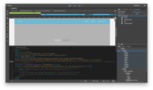
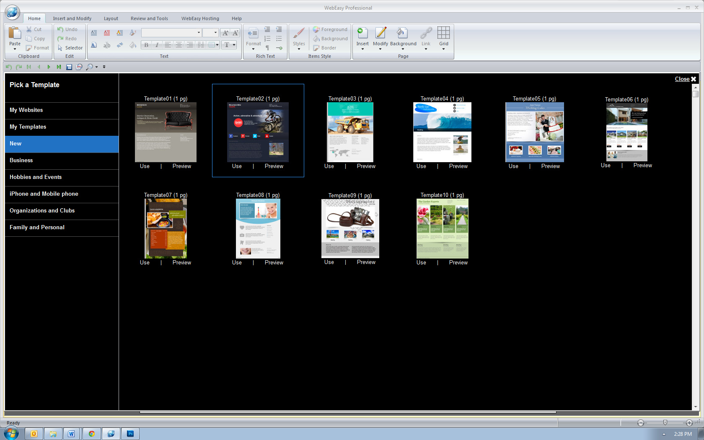

| Programa | Preço |
|---|---|
| Adobe Dreamweaver | 24.50€ por mês |
| Avanquest Web Easy Professional | 24.90€ por mês |
| Visual Studio Code | Gratuito |


Entre muitos softwares que exits ede programação foram estes os escolhidos para falar um pouco, não quer dizer que sejam os melhores ou os piores pois isso não existe, cada programador tem a sua maneira de trabalhar e queprograma prefere usar!
FONTE: WIKIPEDIA